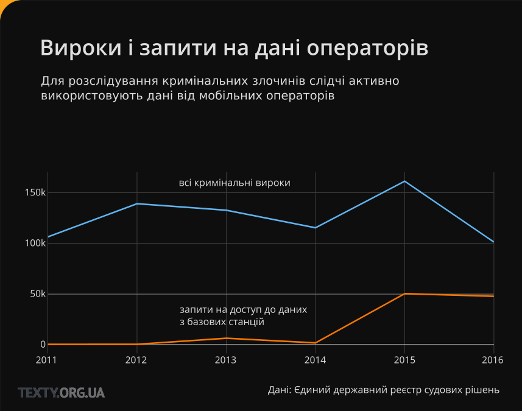

Дані з вашого мобільного телефону розкажуть про вас усе — навіть без прослуховування. Торік українські суди винесли 100 тисяч вироків за кримінальними справами. І 50 тисяч разів наші суди давали дозвіл на використання слідчими даних з мобільних телефонів українців.
Мобільний телефон стає продовженням нашої особистості і нашого інтелекту. У вас зламався смартфон — і ви відчуваєте себе обмеженим, як без рук. Це не залежність від гаджетів, це еволюція. Але вона створює і нові проблеми. Жоден тоталітарний режим ніколи й не мріяв отримати такий обсяг інформації про кожного свого громадянина, який дає мобільний телефон — навіть коли його не прослуховують. Не дивно, що аналіз даних із телефону стає все більш важливою навичкою при розкритті злочинів.
Ми визначили, наскільки масштабно досліджують дані з телефонів, і як часто це відбувається
Щоб отримати дані з вашого телефону, які зберігаються на обладнанні мобільного оператора, правоохоронці мають піти по дозвіл до суду. Єдиний державний реєстр судових рішень — це база, в яку вносять тексти усіх судових рішень в Україні, починаючи з 2010 року. Зараз у базі більше 65 мільйонів документів.
Ми вводили у поле пошуку різні ключові слова. Шукаючи за словами типу “GSM”, “GPRS”, “IMEI”, ми звернули увагу на те, що часто трапляються рішення, у яких слідчі для розслідування злочину просять доступ до даних від мобільних операторів. Особливістю таких рішень є те, що у них зазначається повний перелік ідентифікаторів базових станцій. LAC і CID (код території та код станції) — це двобайтні числа, які вкупі із кодом країни та кодом оператора точно ідентифікують базову станцію.
Зазвичай події розгортаються так. Слідчі (експерти) їдуть на місце злочину і проводять радіорозвідку. Простими словами — визначають, які базові станції знаходяться поряд, а отже — могли мати з’єднання із мобільним телефоном зловмисника. Зробити таку радіорозвідку зараз можна навіть за допомогою звичайного смартфона. Спеціальний застосунок покаже вам ідентифікатори базових станцій в зоні видимості вашого телефона. Знаючи ці унікальні ідентифікатори, слідчі через суд отримують у оператора дані про всі сеанси зв’язку, які були здійснені через ці станції впродовж певного часу на момент злочину та після нього. Навіть якщо ви нікому не дзвонили, не отримували смс і не користувались інтернетом, ваш увімкнений телефон періодично зв’язується з базовими станціями навколо, щоб вчасно підключитись до найближчої чи найменш завантаженої із них. Закон вимагає від операторів зберігати дані про такі з’єднання впродовж трьох років.
З іншого боку, оскільки ідентифікатори базових станції відкриті, в інтернеті є безкоштовні бази станцій, які, крім усього іншого, містять їхні приблизні координати. Внесення цих даних в бази називається нетмоніторингом — а займаються ним добровольці з усього світу. Одна з таких баз — Mozilla Location Service. Вона використовується браузером для знаходження приблизних координат користувача, коли не працює GPS. Це потрібно для сервісів Mozilla на вашому телефоні.
Ми завантажили з реєстру усі рішення за 2016 рік, в яких згадуться слова “LAC” та “CID” в усіх можливих варіаціях. Потім розпізнали для кожного рішення список LAC та CID базових станцій, а тоді поєднали із координатами у відкритих базах. Отримали інтерактивну карту базових станцій із переліком судових рішень, у яких вони фігурують. Клікайте на базову станцію і дивіться ухвали про доступ до даних з неї.
Клікайте по базовій станції на карті щоб дивитись рішення у яких вона фігурує
Порівнюючи кількість кримінальних вироків, що надійшли до реєстру за рік із кількістю запитів на доступ до даних з базових станцій можна зробити висновок, що дані мобільних операторів використовуються у розслідуваннях досить часто.
* * *
Нижче читайте про те, як слідчі використовують дані з мобільних телефонів.
— І що — там, де знайшли труп, немає мобільного покриття?
— Так, там мобілка не бере.
— Тоді глухар.
Такий умовний діалог можна почути в кабінетах слідчих при обговоренні злочинів, які сталися “поза зоною досяжності” мобільного зв’язку. “Стара школа”, яка уміла розслідувати злочини без даних із мобільних телефонів, відходить. А новим не так часто і потрібні ці знання.
У цьому дослідженні ми зосередимося лише на даних з мобільних телефонів, які використовують слідчі. Про прослуховування тут не йдеться.
— Майже по кожній кримінальній справі потрібно з’ясовувати, з ким спілкувався підозрюваний і де він знаходився на момент здійснення злочину. Телефон — це супер-підказка для нас, — каже слідчий Головного слідчого управління поліції Андрій.
Але щоб отримати такі дані від мобільного оператора — знадобиться рішення суду.
Під час розслідування злочину слідчий збирає інформацію не лише про підозрюваних, але й про їхніх співрозмовників та свідків. На збір інформації про дзвінки, повідомлення та місце перебування, а також на прослуховування у правоохоронців є вісімнадцять місяців.
— Роздруківка дзвінків і дані про місце перебування абонента допомагає знайти розшукувану особу або вкрадену річ, знайти співучасників злочину, побудувати слідчі версії та розкрити злочин "по гарячих слідах", — пояснює слідчий Максим із головного слідчого управління СБУ.
Мобільний оператор з легкістю визначає, де знаходиться мобільний телефон, бо знає, яка антена передає сигнал із апарата в ту чи іншу мить.
А маючи звіт про баланс абонента мобільного зв’язку, слідчий бачить усі фінансові операції за його рахунком: поповнення, оплата мобільних послуг, зміна тарифного плану, баланс рахунку тощо. Крім цього, стає доступною інформація про телефонні дзвінки, вхідні та вихідні повідомлення.
Зі звіту стає зрозумілим, з ким спілкувався абонент, о котрій годині, як довго тривала розмова. Якщо абонент був поза зоною, і він користується послугою переадресації виклику, слідчий побачить номер служби, яка повідомляє в смс, що йому телефонували. Також буде видно, хто та коли відправляв йому смс та ммс. І що важливо – ми побачимо, де знаходився апарат в той чи інший момент. При цьому, ми побачимо адресу — де встановлена антена, яка прийняла сигнал.
Мрія усіх слідчих – база даних із автоматично записаними розмовами та повідомленнями усіх без винятку абонентів. Але здійснитися цій мрії не судилося – мобільні оператори не зберігають тексти смс та ммс, не кажучи вже про телефонні розмови.
Слідчий повинен обґрунтувати в суді, чому йому порібні дані з мобільного телефона. Для цього є спеціальна форма звернення, суворо регламентована. І якщо спеціаліст забуває щось вказати, суд йому відмовляє. За словами судді судової палати з розгляду кримінальних справ Апеляційного суду міста Києва Олега Маліновського, слідчі часто досить халатно готують документи, і суд їм відмовляє — як ось у цьому випадку. Якщо ж суддя дав "добро", слідчий повинен офіційно звернутися до мобільного оператора із проханням надати інформацію щодо вказаних номерів.
Уряд зобов’язав операторів телекомунікаційних послуг зберігати дані про дзвінки, СМС та місце перебування користувачів протягом строку позовної давності – тобто, трьох років. Але змусити операторів миттєво реагувати на звернення правоохоронців держава не може.
— Приходиш до них в офіс, б’єш поклони. Нагадуєш, просиш: "давайте швидше". А на тебе дивляться, як на дурника, і кажуть: "ще трохи почекайте". З такою роботою про розкриття злочинів по гарячим слідам і мови бути не може. Сліди холонуть, злочинці тікають. А ми залишаємося крайніми,— кажуть слідчі.
Під час відрядження у Донецьку область моє таксі на тимчасовому блокпосту зупинили патрульні поліцейські:
— Представтесь, будь ласка. Куди їдете і для чого?,— поліцейський засунув голову у відчинене ліве вікно заднього сидіння, а його колега нагнувся і підозріло дивиться на мене.
— Я журналіст. Буду писати репортаж.
— Журналіст… Нам потрібно сфотографувати ваше посвідчення, записати номер телефона та код ІМЕІ.
Невже я виглядаю підозріло…?
— Я не знаю ,який у мене код ІМЕІ.
— Введіть комбінацію *#06#, а ми сфотографуємо ваш екран,— відпрацьована фраза пролунала, наче скоромовка.
— Фотографуйте, — я поспішала, і гаяти час на порожні суперечки дуже не хотілося.
Так мій телефон потрапив до бази "Антарес", яку вже багато років поповнюють поліцейські. У цій базі до коду ІМЕІ прив’язують номер сім-картки, яка теж має свій унікальний ідентифікатор IMSI та ім’я власника.
У програмному забезпеченні кожного мобільного телефона є унікальний серійний 15-значний номер пристрою — ІМЕІ. Завод-виробник встановлює його, щоб ідентифікувати телефон в мережах форматів GSM та UMTS. ІМЕІ автоматично передається у мережу оператора, коли абонент на зв’язку.
Номер сім-карти потрібен для ідентифікації абонента в мережі, а номер ІМЕІ ідентифікує місце перебування телефонного апарата. Коли користувач вмикає свій телефон, код ІМЕІ і номер картки з’являються в мережі одночасно. Вони – наче сіамські близнюки, нерозлучні, і рухаються синхронно. Слідчий може отримувати інформацію пересування абонента з точністю до 50-ти метрів, а також бачити усі його дзвінки.
За неофіційними даними, зараз "Антарес" містить кілька десятків тисяч номерів ІМЕІ. Доступ до бази мають лише слідчі МВС та СБУ.
— Періодично копів напружують, щоб усіх підозрілих осіб, яких ми перевіряємо, заносили в базу. Фотографували ІМЕІ і номер телефона записували, — пояснює патрульний поліцейський Андрій.
В усіх людей, які проходять через поліцію, ми намагаємося зафіксувати їхні номери телефонів та ІМЕІ. Вони заносяться у нашу базу. І у випадку скоєння резонансного злочину легше знайти, яка людина мала такий номер телефона, — додають слідчі.
База "Антарес", наприклад, визначає людей, які допомагають терористам з т. зв. “ЛДНР”. Якщо поліцейські затримують терориста, робиться роздруківка дзвінків його телефона. Ті номери, на які він дзвонив найчастіше, передаються в СБУ. Слідчі знаходять власників цих номерів та допитують їх.
Але під час спланованої операції злочинці зазвичай не користуються телефонами. Лише у випадках, коли злочин стався спонтанно, мобільні зазвичай лежать у кишені, що і полегшує життя правоохоронцям.
Менша користь від номера ІМЕІ для слідчих лише в тих випадках, коли унікальний код має двійників. Тобто, коли один і той же самий ІМЕІ-номер належить кільком стільниковим телефонам.
— ІМЕІ—номер присвоюється заводом, і він унікальний. І податкова контролює, скільки вироблено телефонів, за ІМЕІ. Але китайські виробники платять податок за один ІМЕІ-номер, а присвоюють його цілій партії стільникових телефонів. Через це відстежити ІМЕІ-номер телефона з цієї партії неможливо, — пояснює слідчий Олександр із Голосіївського райвідділку столичної поліції.
Утім, малоймовірно, що апарати з двома однаковими ІМЕІ-номерами одночасно будуть знаходитись біля місця злочину.
Слідчі зазвичай отримують від операторів інформацію про усі номери телефонів, які були активними неподалік від місця злочину. Потім усі ІМЕІ цих телефонів пробиваються по базі, після чого усім власникам номерів телефонують і викликають на допит.
Також через “Антарес” можна відстежувати спільне переміщення двох або більше мобілок одного або різних операторів на території країни — виявляються пари, якими користується одна особа.
— За допомогою бази "Антарес" я перевіряю, кому належить телефон (джекпот — якщо імена є в базі), а за допомогою бази Інституту радіочастот – дивлюся, чи не був вкрадений цей апарат, а якщо був, то коли і за яких обставин, — розказує слідчий Олександр.
Базові станції допомагають слідчим відслідковувати пересування абонента з місця на місце. Це поширений серед правоохоронців спосіб збору інформації — для цього використовуються ідентифікатори базових станцій мобільних операторів (LAC i CID), які дозволяють спостерігати, з якої до якої станції рухався абонент. У великих містах точність методу може бути в межах 150-ти метрів. У приміських і сільських районах щільність установки базових станцій нижча, тому і точність методу значно менша — аж до 35—ти кілометрів. Відповідно, похибка щодо перебування об’єкта може сягати 30-35 км.
— Приміром, якщо невідомі хулігани напали на вас о десятій годині вечора, побили і пограбували, то знайти їх можна, використавши коди LAC і CID. Спочатку слідчий передає адресу, де було вчинено злочин, Управлінню оперативно-технічних заходів (УОТЗ) МВС. Це управління надає слідчому список базових станцій мобільного оператора, наприклад, "базовими станціями ПрАТ "Київстар" є LAC 44501 CID 162", — пояснює слідчий Антон Шевченко.
Після цього слідчі звертаються до суду із проханням надати доступ до інформації про сеанси зв'язку споживачів телекомунікаційних послуг, здійснених через LAC 44501 CID 162 з дев’ятої вечора по сьому ранку.
Таким чином, правоохоронці отримують список номерів мобільних телефонів, ІМЕІ, які знаходилися у потрібний час у зоні базових станцій, адреси розташування на номери базових станцій, які забезпечували зв'язок абонентів, вхідні та вихідні дзвінки, SMS та MMS тощо.
Уточнити дані пошуку допомагають спеціальні програми, які використовують сигнали мобільних мереж і супутникові системи GPS. Такі програми допомагають звузити діаметр місця розташування до 10-15 метрів, а інколи — і до 2-5 метрів. Пошук можливий, якщо на апараті встановлена подібна програма (зазвичай вона має назву “Знайди загублений телефон”, “Відслідкуй місце перебування члена родини” тощо). Тобто, так можна знайти свій телефон або телефон когось із близьких людей. Або можуть знайти вас.
Проте і у цього методу є недоліки. Висока точність вимірювання можлива тільки на відкритій місцевості: GPS-приймач повинен бачити як мінімум 3-4 супутники. У містах з висотною забудовою, а тим паче в приміщеннях, система GPS не працює.
Але вихід є. Можна використати щільну інфраструктуру базових станцій мобільних операторів, і тоді, навіть якщо абонент знаходиться у приміщенні, сигнал покаже, де він, із точністю 20-50 метрів. Тобто, якщо слідчий запитає про місце перебування номера не лише в оператора, який його обслуговує, а й у решти операторів, то це полегшить пошуки апарата. Втім, до таких хитрощів слідчі вдаються рідко. Хтось просто не знає про такі можливості, комусь не вистачає на це часу; є й такі, кому просто ліньки цим займатися.
— Високої точності визначення місця перебування телефона можна досягти за рахунок множинного запиту з кількох базових станцій за короткий проміжок часу. Я свого часу ставив експерименти типу "знайди друга". При невеликому переміщенні телефона в центрі Львова виходила “засвітка” з кількох базових станцій, на перетині засвічень дійсно був даний телефон. Точність в 50 метрів — цілком реальна величина. Тобто, метод дієвий. Якщо робиться запит з усіх базових станцій, які бачить телефон, точність виходить 20 метрів або краще, — ділиться досвідом слідчий Роман із слідчого управління Нацполіції у Львівській області.
Також за допомогою телефона можна визначити регулярні маршрути, за якими пересувається абонент, з точністю до кількох десятків метрів. Карти маршрутів – величезний простір для аналізу.
— Можна аналізувати щоденні та циклічні маршрути та відхилення від них, порівнювати ці маршрути із маршрутами потрібних абонентів. Таким чином, можна виявити можливі особисті безпосередні контакти з власниками інших номерів, їхню періодичність (перебування в безпосередній близькості в одному місці), — додає слідчий Максим.
Правоохоронець згадує випадок, як кілька років тому невідомі злочинці вкрали фуру з товаром на мільйон гривень. На щастя, у кабіні залишався мобільний водія. Маршрут фури вдалося вирахувати саме завдяки телефону. Злочинців затримали, а вантажівку повернули власнику.
Як би не намагались слідчі використати дані з мобільних телефонів для доказу вини підозрюваного, виходить це у них далеко не завжди.
— Постає питання: якими відомостями має підтверджуватися належність телефонного номера особі, з приводу якої звертаються слідчі органи щодо здійснення роздруківки телефонних номерів? — ставить риторичне запитання суддя Маліновський.
Судді нерідко ставлять під сумнів достовірність даних, отриманих під час негласних слідчих дій.
І ось чому.
Кожне з'єднання абонента фіксується програмним забезпеченням оператора стільникового зв'язку. На жорсткому диску або іншому носії інформації, вбудованому в обладнання оператора, проводиться запис в так званий лог-файл про з'єднання, вишку стільникового зв'язку, тривалість дзвінків тощо. За зверненням слідчого співробітник оператора копіює лог-файл абонента за необхідний період і роздруковує його.
Виходить, що інформацію, що має доказове значення, правоохоронні органи отримують від співробітника комерційної організації, який і здійснює її копіювання, редагування і т.д. у позапроцесуальному порядку. При цьому він не несе жодної відповідальності, якщо фальсиікує дані чи вони спотворяться через технічні помилки.
— Такі випадки бувають. В ході першого судового процесу у справі про вбивство жінки син потерпілої заявив, що кількість його дзвінків матері в день вбивства різниться з тією кількістю, які відображені в даних оператора зв'язку. Суд зробив повторний запит оператору, і дзвінки знайшлися. Пояснено це було "технічними неполадками", — розповідає прокурор Андрій.
Теоретично, правоохоронці можуть знайти вкрадений телефон. Але заява про викрадений телефон – не привід вираховувати місцезнаходження апарата за номером телефона або ІМЕІ для слідчого. Закон каже, що роздруківка надається тільки під час розслідування тяжких або особливо тяжких злочинів.
А крадіжка телефона – не тяжкий злочин.
До того ж, подібних справ у кожного слідчого – сотні. І якісно розслідувати кожну з них він фізично не встигає.
— Є такий міф, мовляв, вкрали мій телефон, і номер ще на зв’язку. Ану, вирахуйте, де він зараз знаходиться. Ні, не вийде. Бо поліція — це не бюро знахідок, а правоохоронний орган. Тут займаються розкриттям злочинів, а не пошуком загублених рукавиць і забутих в трамваї парасольок, — так бачить місію своєї служби дільничний Олег.
Втім, це не означає, що непотрібно писати заяву у поліцію, якщо мобільний вкрали. Бо якщо правоохоронці знають, що телефон вкрали, то його номер ІМЕІ з’являється у "чорному списку" в базі Українського державного центру радіочастот. Під час затримання злочинців, ІМЕІ їхніх мобільних телефонів перевіряють саме по цій базі. Якщо виявляється, що телефон вкрадений, реальний власник має шанс повернути його собі.
На сайті МВС є ресурс, на якому можна подивитися за номером ІМЕІ, чи, випадково, поліція не знайшла зниклий гаджет під час розслідування інших, тяжчих злочинів.
— У одного хлопця гроші відібрали, ланцюжок, телефон, біля гуртожитку. І найцікавіше, що не якісь гопники, а курсанти академії МВС. Після цього випадку відкрив кримінальне провадження (розбій), і якраз і вирахували їх за телефоном, хоча картку відразу викинули. І коли викликали потерпілого, йому дали для впізнання фото курсантів. Правоохоронці на роздруківці побачили, що курсанти дзвонили з гуртожитку після розбою, — розповідає слідчий Олександр.
Шанс знайти вкрадений телефон є, хоч він і мінімальний. Це підтверджує і офіційна статистика, яку час від часу публікують на веб-сторінках обласних та міських управлінь.
— Якщо маєте IMEI телефона — не полінуйтеся написати заяву. Хоча б в базу на облік поставлять, раптом і випливе колись. Он пару місяців назад ми зупинили двох пацанчиків, у кожного по три телефони у кишені, які в розшуку, — підбадьорює патрульний Євген із Деснянського району міста Києва.
P.S.: Офіційно інформувати журналістів про те, як саме відбувається збір інформації під час слідства, правоохоронні органи не хочуть. Наші інформаційні запити із проханням надати ці дані було проігноровано. Тому слідчі та оперативники силових відомств надавали коментарі ТЕКСТАМ неофіційно, і просили не називати їхніх справжніх імен.